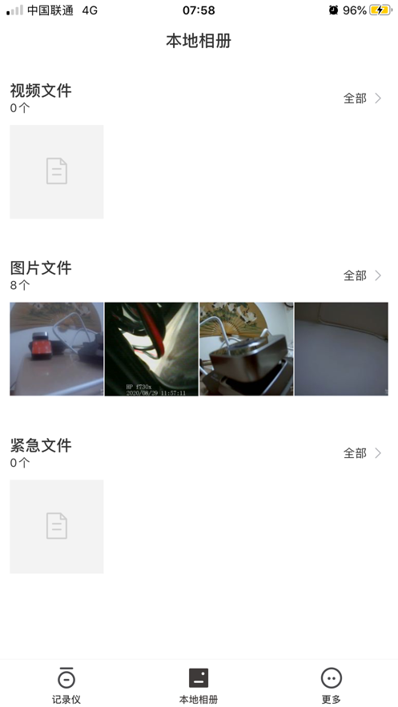

SARGO 全能力盘点——山狗运动相机安卓端到底能做多少事
SARGO 是山狗运动相机的安卓配套 App，但它远不止一个"遥控器"。从连接痛点到在线回放、参数调整，这篇把它能做的事完整铺开，帮新老用户一次性摸清楚底。
运动相机厂商的配套 App 大体分两种：一种做成"遥控器+"，能取景、能拍、能导视频，但也就止步于此；另一种把相机的大部分操作都搬到了手机上，让你不用反复按相机上的小按键。SARGO 属于后者，去它的SARGO官网转一圈就能感受到——在安卓阵营里，它可能是功能最完整的山狗系配套工具。
但完整不等于简单。不少用户第一次上手就被「WiFi 热点连不上」「连上就掉」「怎么不能自动切流量」这些问题绊住，然后又在功能面板里迷路。这篇盘点就从一个资深用户的角度，把 SARGO 的能力域一层层拆开，说清楚它能做什么、亮点在哪、什么场景真正用得上，也不回避那些卡过不少人的短板。
连接与准备：最基础也最容易踩坑的一环
拿到SARGO下载的安装包装好之后，很多人以为打开 App 就能自动发现相机，实际不是。连接的第一步是让手机连上相机的 WiFi 热点——而这个热点的设计，恰恰是安卓用户最容易踩的坑。
相机 WiFi 是本地直连，不走互联网。手机一连上就会弹「此网络无法访问互联网」，这时候你必须选「仍要连接」，不能点取消。取消等于立刻断开。更麻烦的是，安卓系统上各种名字花里胡哨的「智能切网」功能——华为叫 WLAN+、小米叫双 WLAN、OPPO 和 vivo 叫 WLAN 助理、三星也有 WLAN 助理——只要检测到热点没网，就会偷偷把手机切回流量或家里的 WiFi。你刚连上、SARGO 那边就掉了，典型的「连上就断」，根源全在这。
关掉这些切网功能之后，连接流程其实很稳定：相机双击按键开 WiFi → 手机 WLAN 列表找以型号开头的热点（P10、G10、G21、A9、T50 等前缀）→ 默认密码 12345678 → 选「仍要连接」。iPhone 用户可以跳过这整段，iOS 没有系统级的智能切网机制。
连接稳定性这块，SARGO 的体验在同类 App 里算好的——热点识别快，重连逻辑也清晰，只要把安卓那堆智能功能关掉，基本不会出问题。
实时取景与参数调整：把相机菜单搬上了手机屏幕
连上之后就是 SARGO 最核心的能力：实时预览。相机画面直接出现在手机屏幕上，延迟控制得不错，运动拍摄时举着手机取景比凑上去看相机的小屏幕舒服太多。
预览界面同时也是参数调整面板。分辨率（720P 到 5.3K）、帧率（24fps 到 120fps）、曝光补偿 EV、白平衡，这些最常调的拍摄参数都能在 SARGO 里直接改，而且改完立即同步到相机端——实时预览画面会跟着变，调 EV 加一档就能看到画面变亮，调白平衡选「阴天」就能看到偏色修正的效果。少数高级参数比如循环录制的覆盖时长，可能要进专门的设置页，但绝大多数日常操作在预览界面就能搞定。
这块的亮点很实在：运动相机的按键小、菜单层级深、在户外强光下看屏幕也费劲。SARGO 把参数调整搬到手机上，等于把相机的操控面板换成了一个更大、更清晰、更顺手的界面。尤其是调 EV 这件事，逆光拍摄时对着相机小屏幕拧 EV 轮，远不如在手机上点加减来得直观。

在线回放：先看再下，比全部下载省太多
运动相机一次出门能拍几百个片段，全部导到手机再逐个翻着删是传统流程——耗时间、占存储、还容易删错。SARGO 的在线回放直接在相机卡上播放文件，不需要先下载。
回放的能力面包括：直接播放和暂停、拖动进度条跳到任意位置、播放中按拍照按钮从视频里截帧存进手机相册、标记待下载然后批量导走、直接删除相机卡上的文件。文件按时间排列，视频和照片混在一起，找起来还算直观。
流畅度是有条件的：4K 源文件比 1080P 更容易卡，手机离相机越远信号越弱。部分型号提供「流畅模式」，牺牲一点画质换传输速度，卡的时候切换一下就好。卡了也不用急着重启 App，暂停再继续、或者拖一下进度条，通常就能恢复。
为什么要单独说这块？因为它的对比优势太明显了：在线翻一遍基本秒加载，不占手机存储，不耗 WiFi 带宽去传整个文件，而且你是决定好哪些值得留才下载——不会出现「下载了 500MB 最后只留 20MB」的浪费。这是 SARGO 最实用的功能之一，也是很多人买山狗之后才发现的惊喜。
短板也要说
盘点不能只说优点。SARGO 也有几个绕不开的短板：
第一，安卓智能切网的对抗成本。虽然关掉那些功能就能解决，但不同品牌、不同系统版本的入口位置不一样，新用户要花功夫找一遍。华为用户要进 WLAN → 更多 → WLAN+，小米要进双 WLAN 加速，OPPO vivo 三星各自有路径。如果能在 SARGO App 里加个检测提醒就更好了——但目前没有。
第二，UI 风格的统一性。不同版本、不同相机型号，SARGO 的界面入口位置会有差异——有的参数在下方工具栏，有的在右上角齿轮，有的要左右滑出面板。SARGO文档里只能笼统说「一定在实时预览界面的某个方向」，用户得自己摸一遍。
第三，在线回放的流畅度上限。4K 素材尤其是高帧率 4K，WiFi 直连的带宽确实吃紧。虽然有流畅模式可选，但牺牲画质之后又背离了拍 4K 的初衷。这更像是硬件层面的瓶颈，App 能做的有限。
什么样的人该用它
梳理完能力域，最后画个画像——SARGO 适合哪些人：
刚入门运动相机的新手。 对着相机小屏幕按按键是新手最大的痛点，SARGO 把取景、调参、回放全搬到手机上，等于给了一个更大的操作面板。尤其是在线回放的「先看再下」逻辑，帮新手省了大量整理素材的时间。
经常户外拍摄的旅行/运动爱好者。 徒步、骑行、滑雪、冲浪这些场景，手机拿着比相机取景方便得多，而且拍完当天就能在 SARGO 里快速筛片段、挑值得留的，不用等回家再折腾。
多设备用户。 家里不止一台山狗相机的话，SARGO 能统一管理，换相机不用换 App，参数调整和回放的操作逻辑也一致。
综合来看，SARGO 不是一个「够用就行」的配套工具——它真正把运动相机的手机端体验做完整了。从连接到取景、从调参到回放，每一环都在解决真实的用户痛点。安卓阵营里能做到这个完整度的配套 App，并不多见。
这套资料在三个仓库都有备份：GitHub 是主仓库，Gitee 和 GitCode 是国内备份，随时能拿到最新版的说明文档。